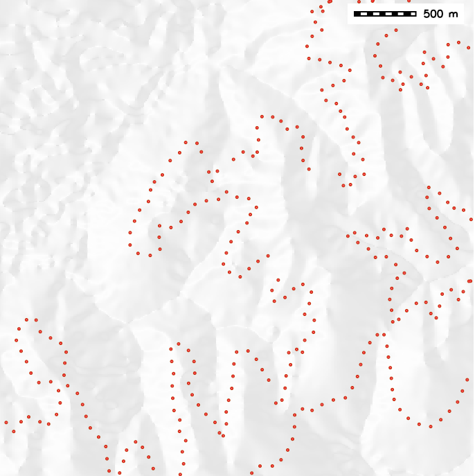
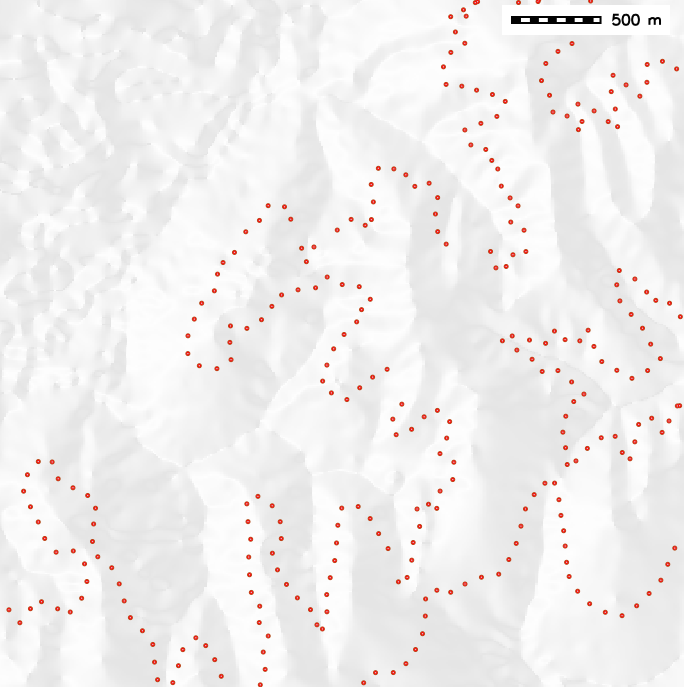
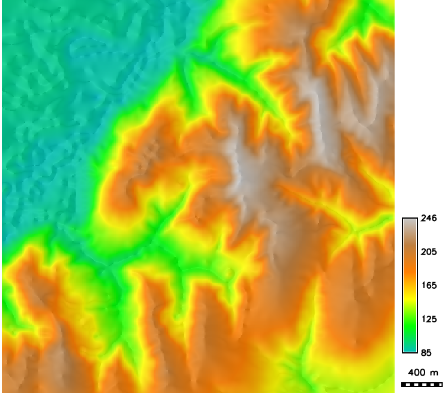
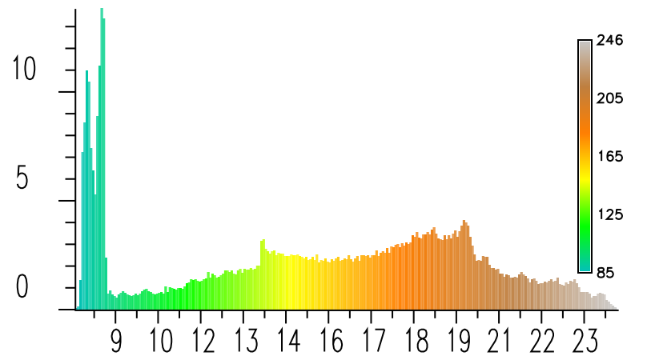
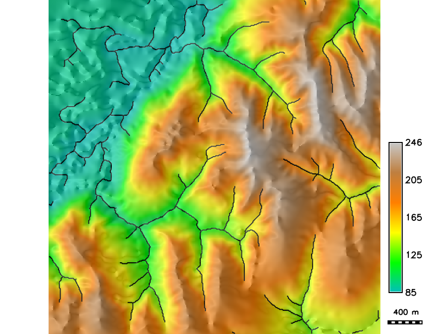

Geostatistical simulations and error propagation
Helena Mitasova, Anna Petrasova, Vaclav Petras
Learning objectives
- motivation for geostatistical simulations
- geostatistical conditional simulations
- Gaussian Sequential Simulation
- simulations for error propagation
- coupling GRASS and R for geostatistics
Problem formulation
In previous units we generated DEMs with simulated noise
by adding random values to the DEM with:
- uniform distribution
- gaussian distribution
- distribution with spatial autocorrelation
- fractal
We then visualy evaluated the impact of different noise distribution
on the flow pattern modeling and stream extraction.
Problem formulation
Different patterns of flow accumulation from noisy DEMs


How to quantify uncertainty in the spatial pattern of the modeled variable
due to uncertainty in elevation values?
Problem formulation
To quantitatively evaluate uncertainty in parameters derived from a DEM
we can generate multiple realizations of a DEM by starting with different seed
This approach does not take into account the spatial dependency of the elevation values in our DEM
We can use geostatistical simulation to generate multiple DEM realizations and use them
to estimate error propagation in derived variables
Computing the surface model
Derive model of spatial distribution of a variable
based on a limited set of discrete scattered observations:
- if the measured data capture features of the distribution at the level of detail needed
for the application we can use interpolation
See GIS582 Spatial interpolation topic
- if the measured data are limited and we know statistical properties of the distribution,
we can use simulation
Note: Spline interpolation methods are based on deterministic, process-based simulations
of a thin flexible sheet, but they are also equivalent to universal kriging with the covariance function
determined by a roughness penalty (smoothness seminorm)
see Mitas 1999
Computing the surface model
Given $m$-points $(x_i, y_i, z_i), i=1,m$
find such $F(x,y)$ that for each $i=1,m$
$$z_i=F(x_i,y_i) + e(x_i,y_i)$$
where
$$
F(r) = T(r) + \sum_i^m \lambda_i R(r,r_i)
$$
- $r = (x,y)$ is unsampled point and $r_i=(x_i,y_i)$ is a measured point
- $T(r)$ is trend (low order polynomial),
- $λ_i$ are coefficients computed by solving a system of linear equations
- $R(r,r_i)$ is a function of distance between unsampled and measured points (e.g. radial basis function, model variogram)
- $e(r_i)$ is estimate of measurement error
then use $F(r)$ to compute $z$ at unsampled grid points
Computing the surface model
From scattered points (red) to regular grid (blue)


Interpolation or simulation?
- The problem does not have a unique solution so additional conditions are used.
- Interpolation: we use $F(x,y)$ to estimate values at unsampled locations
- Simulation: we use $F(x,y)$ to condition our simulation of a more complex surface
Geostatistical simulations
- modeled spatial distribution is complex
- limited number of samples is available
- interpolation does not capture the complexity, result is too smooth
- we have some knowledge of statistical properties of the modeled distribution
- we generate many realizations of the surface using the given statistical properties
- the realizations are used to compute the simulated distribution mean and uncertainty maps
Applications
Observations where sampling is limited:
- subsurface: reservoir modeling in petroleum industry, mining,
soil properties, groundwater pollution
- surface: variables not detectable by RS, e.g. some pollutants
- generate multiple realizations of modeled distribution for uncertainty propagation studies
Analyze the input data
- input: sparse, scattered point measurements
- analyze the data for normality (compute histogram)
- apply transformation if needed to get normal distribution (log or Box-Cox transform)
- compute experimental and model semivariogram
- define spatial extent and resolution of resulting grid
Generate one grid realization
Workflow for Gaussian Sequential Simulation
- assign data points to closest grid cell (nn binning)
- select random unsampled grid cell and compute kriged estimate + random residual to get simulated value
using the neighboring given points
- use "random path" to define order of empty grid cells to be simulated
- at each new unsampled grid cell use the nearby given points and previously simulated values
to compute the simulated values
nn binning assumes that the grid cell size is smaller than the min distance between points, otherwise we would need
to aggregate some points, e.g. using mean
Gaussian Sequential Simulation
- Each realization starts with a different seed
- Compute hundreds or thousands realizations
- Result: mean simulated values grid and standard deviation grid
See also Prof. Pyrcz's (GeostatsGuy)
lecture and code
Error propagation application
- Given a set of elevation points quantify uncertainty in the stream position derived from DEM
computed from these points while taking into account DEM errors.
-
Assignment Example from A Practical Guide to Geostatistical Mapping by T. Hengl.
Elevation data analysis
Distribution of all points, points with non-integer $z$ values
and points with $z=180$

 

Our data set includes points along contour lines
combined with scattered points along ridge lines and valleys and in the floodplain.
Elevation data analysis
Given points assigned to nearest 10m grid cell and a related histogram


Note that for $z>90m$ there are many points with values at 5m intervals
while there are very few points with values in-between,
reflecting the dense sampling along contours. Histogram $x$ is in tens of meters and $y$ in hundreds of cells
Smooth DEM interpolation
DEM interpolated by spline with tension and its histogram


Note that the histogram of interpolated DEM is quite different from the
histogram from the data
Elevation data analysis in R
Plot distribution for 20% and 80% of sub-sampled points
Note that the histogram is different from the previous two: it does not capture
the difference between the number of points on contours and the scattered points because
of aggregation in smaller number of histogram binns (20 in R versus 255 in GRASS).
Elevation data analysis
- Anisotropic experimental variogram from given elevation data
using 20% and 80% sub-sampled points


The 80% subsample leads to a smoother variogram, but as little as 20% points captures
the characteristics of spatial dependence (autocorrelation).
Note slight anisotropy in 45 degrees direction
(direction of floodplain edge has lower sill)
Elevation data analysis
- Anisotropic experimental variogram for 1000m and 3000m maximum distance
The variogram shows stronger anisotropy for distances over 1km.
When applying GSS, the variogram is used locally (10s-100s of meters)
so we can use an isotropic variogram model
Model variogram

Conditional simulation of DEMs
- Four out of 100 realizations of a DEM in R
Note the JPEG effect(?) in the BW image at low elevation
Conditional simulation of DEMs
- One of 100 DEM realizations and the mean DEM

The white spots indicate locations where the simulated DEM
is above or below the range of interpolated DEM, but within the range of given data.
Conditional simulation of DEMs
- Mean simulated DEM and its standard deviation map

Standard deviation is much higher in the floodplain and along edges,
reflecting insufficient sampling. This is already indicated by comparing the
histogram from the data and
histogram from the interpolated DEM.
Interpolated and simulated DEMs
- Difference between DEM interpolated in GRASS and DEM simulated in R indicates shift of approx 1 grid cell. Problem during export/import?

Stream extraction uncertainty
How does the error in DEM influence the uncertainty in the location of extracted streams?
- derive $n$ stream networks from $n$ DEM realizations
- compute per-cell count $m$ of stream presence from $n$ derived stream networks
- derive probability of stream location at each grid cell as $p = m/n$
Then propagated error of extracted streams is
$$e = -(1-p) \ln(1-p) - p \ln(p)$$
Streams derived from smooth DEM
Flow accumulation and streams derived from the smooth DEM using D8-MFD-LCP method
and threshold 300 of 10m resolution cells: deterministic result

Stream probability map
Stream probability map with $p>0$ and the probable streams with $p>0.5$
Examples of Applications
The approach can be applied to estimate uncertainty and error propagation for
other analysis and modeling problems using the $n$ DEM realizations:
- flood extent prediction
- viewshed mapping and visibility analysis
- cast shadows and solar radiation
- least cost path
- soil erosion and mass transport